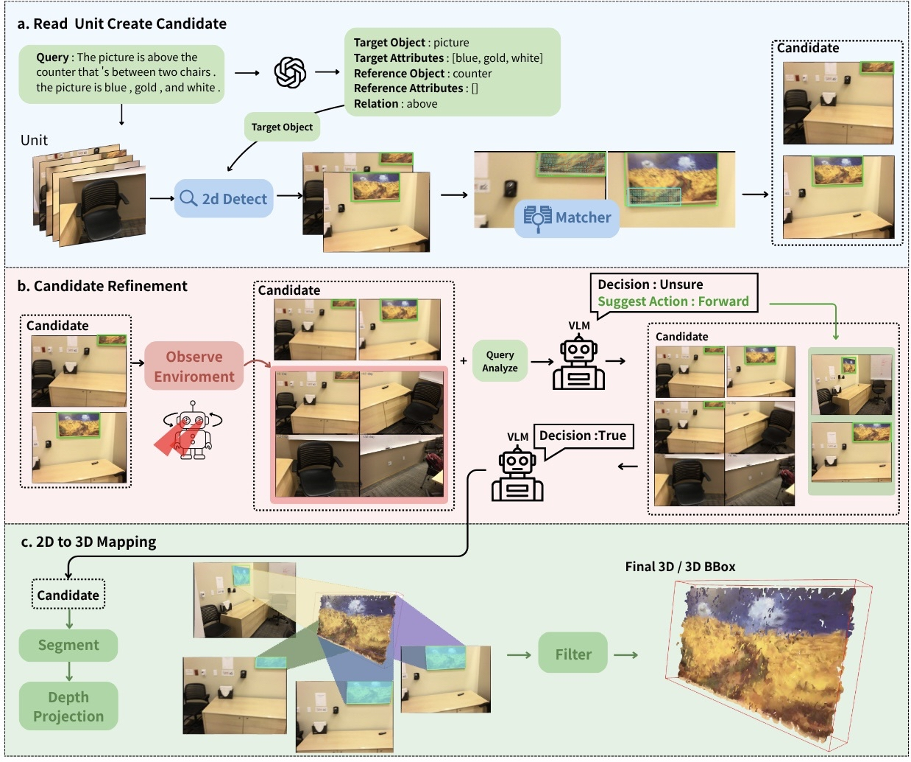
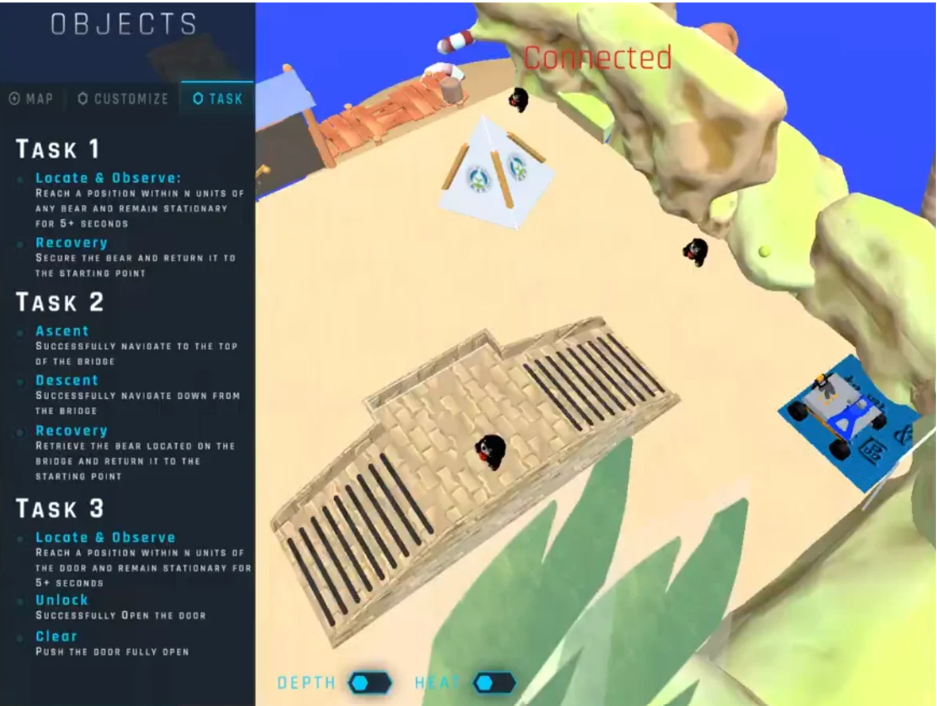
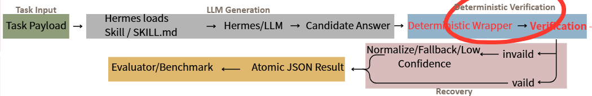
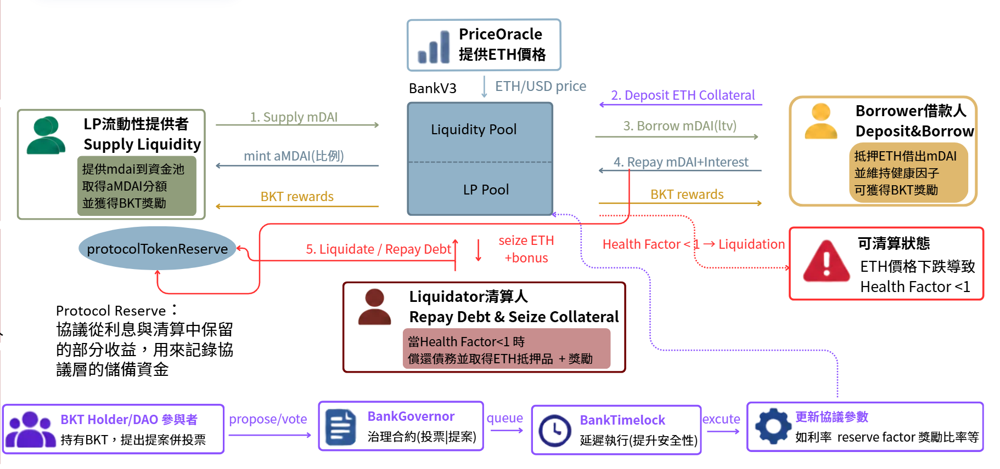
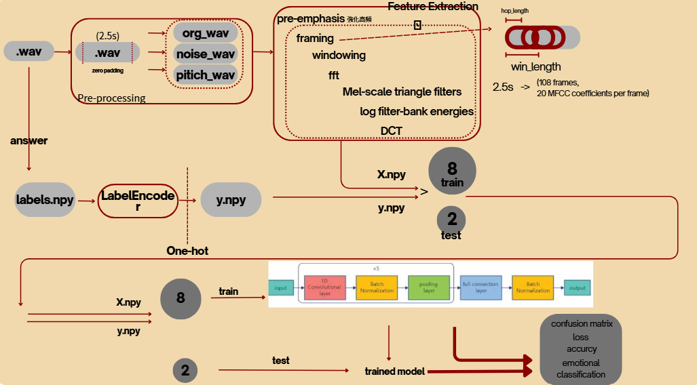
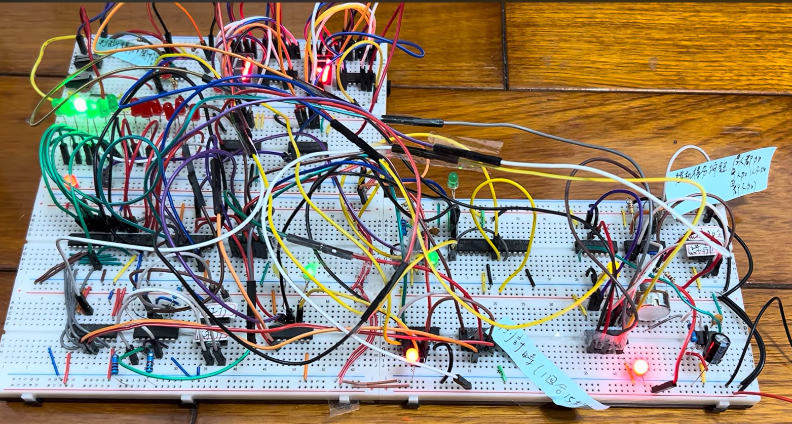
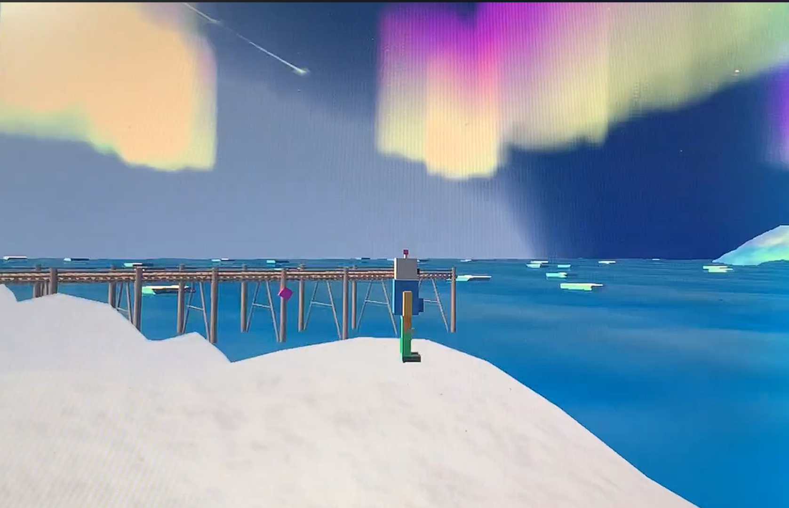

PROVE-3D Research
Zero-Shot 3D Visual Grounding
- PROVE-3D 英文論文已被 ICS 2026 接受
Graduate Portfolio
國立臺南大學 資訊工程學系
About Me
目前就讀國立臺南大學資訊工程學系，研究興趣主要聚焦於 Computer Vision、3D Vision、Vision-Language Models（VLMs）與 Embodied AI。
投入畢業研究 PROVE-3D，研究 Zero-Shot 3D Visual Grounding，探討如何根據自然語言描述，在多視角 RGB-D 場景中取得足夠的視覺證據，並完成目標物件的三維定位。研究過程中亦累積 benchmark evaluation、ablation study、error analysis 與 evaluation protocol 設計經驗，並進一步確立未來希望持續深入 3D Vision、VLM 與 Embodied AI 相關研究。
Academic Highlights
Certificates & Language
Selected Projects
以下六個作品依照研究與修課歷程整理。每個專題皆預留圖片位置，之後可替換成成果圖、Demo 截圖或影片縮圖。






